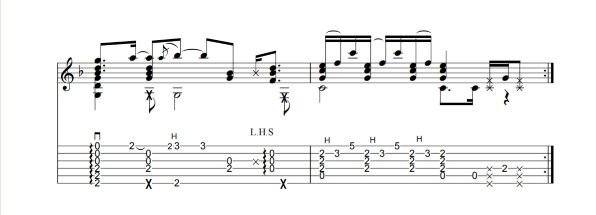
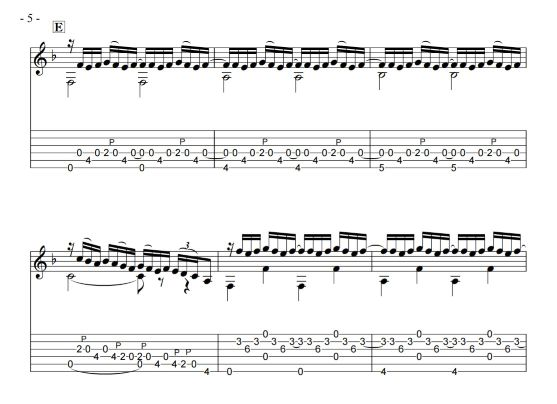
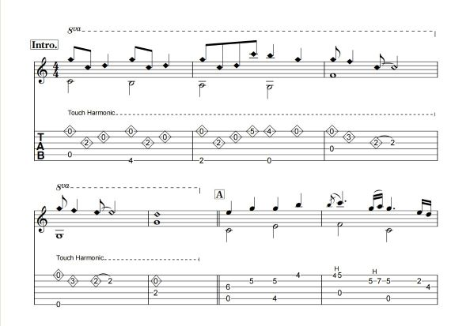

Techniques
Explore each fingerstyle technique using the section links below.
Click to get a quick technique reminder.
Explore each fingerstyle technique using the section links below.
Click to get a quick technique reminder.
A hammer-on creates a new note by striking a finger onto the fretboard without re-plucking the string. It is widely used for legato phrasing and smooth melodic lines.
A pull-off sounds a lower note by releasing a fretting finger with a slight pluck-like motion. It is commonly paired with hammer-ons for faster runs.
Harmonics create bell-like tones by lightly touching a node point while plucking. Natural harmonics are common; artificial harmonics can be used for melodic highlights.
Harmonics - Satoshi Gogo's Distance (Intro) covered by Kaiming Tan